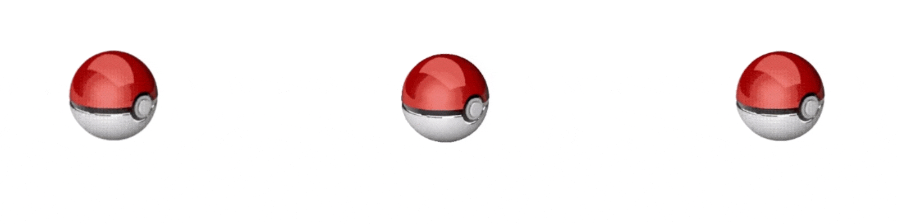

<!DOCTYPE html>
<html>
<head>
  <script src="js/jspsych.js"></script>
  <script src="js/instruction_and_transition.js"></script>
  <script src = "js/practice_trial_package.js"></script>
  <script src = "js/demog_question_package.js"></script>
  <script src="js/jspsych-pratctice-block.js"></script>
  <script src="js/jspsych-stimulus-presentation.js"></script>
<script src="js/jspsych-sequential-stimulus-presentation.js"></script>
<script src = "js/jspsych-multi-stim-multi-response.js"></script>

  <script src="js/jspsych-task-instructions.js"></script>
  <script src="js/jspsych-instructions.js"></script>
    <script src="js/jspsych-html-keyboard-response.js"></script>
    <script src="js/jspsych-image-keyboard-response.js"></script>
    <script src= "js/jspsych-demog-age.js"></script>
    <script src= "js/jspsych-survey-text.js"></script>
    <script src= "js/jspsych-categorize-image.js"></script>
    <script src= "js/jspsych-demog-ethnic-US.js"></script>
    <script src= "js/jspsych-demog-gender-and-education.js"></script>
    <script src= "js/jspsych-demog-disorder-history.js"></script>
    <script src="js/helper_for_generating_stimuli_array.js"></script>
    <script src="js/helper_for_checking_duplicate_stimuli.js"></script>
  <link rel="stylesheet" href="css/jspsych.css"></link>
</head>
<body></body>
<script>

    var verbose = false
    var timenum = Date.now();
    var turkInfo = jsPsych.turk.turkInfo();
    //$.getJSON('https://json.geoiplookup.io/api?callback=?', function(data) {
      //console.log(JSON.stringify(data, null, 2));
     // jsPsych.data.addProperties({ IP: data.ip, country_code: data.country_code });
    //});

    // if we're not on MTurk, create a timestamp-based subject number; otherwise use turker ID
    var subject_id = 'SS' + timenum;
    var survey_code = 'SS' + timenum
    //console.log(turkInfo.workerId)

    /*
    if(turkInfo.workerId === "") {
      console.log(turkInfo.workerId)
      var subject_id = 'SS' + timenum;
    } else {
      var subject_id = 'MT-' + turkInfo.workerId;
    }*/

    // store subject in data on every trial
    jsPsych.data.addProperties({ subject: subject_id });


  var timeline = []

    var survey_code_page = {
     type: "instructions",
     pages:[
         "Your survey code is<p><b>"+ survey_code + "</b></p><p>Please make sure you save this somewhere safe. You will need to enter this code into mturk to be paid.</p>"
     ],
     show_clickable_nav: false

 }

//Before the main task

    //timeline.push(front_page)
    //timeline.push(main_instruction)
    //timeline.push(prepractice_instruction)
    //timeline = timeline.concat(practice_block)

 

var block = {
	type: 'sequential-stimulus-presentation',
	first_stimulus: "<p></p>",
    first_stimulus_final_still: "<p></p>",
    second_stimulus_placeholder: "<p></p>",
    second_stimulus: "<p></p>",
    two_stimuli_interval: 1200,
    key_response: [40],
    minimum_viewing_duration: 200, // daffner2000's info was 600, changed to 200
    response_ends_trial: true,


}


STIMULI_NUM = 15
all_stimuli = get_all_stimuli(STIMULI_NUM)
all_blocks_information = generate_all_block(5, 
                                           all_stimuli, 
                                           [7])
    
console.log(all_stimuli)
console.log(all_blocks_information)


//timeline.push(block)

// need to loop through an outer loop that has all the blocks 
// each block is a timeline variable array 
// each timeline variable arrays contain the combination needed: N background + 10-N deviant, currently set to all 9 + 1
// 
    
    
var test_task_block = {
                        timeline: [

                            {
                                type: 'html-keyboard-response',
                                stimulus: '<p></p><p></p>',
                                trial_duration: function(){
                                    var random_duration = 800 + 500 * Math.random()
                                    return random_duration  } , //The interval between the offset of one stimulus and the onset of the next stimulus ranged between 800 and 1300 msec
                                choices: jsPsych.NO_KEYS
                            },

                            {
                                type: 'sequential-stimulus-presentation',
                                first_stimulus: function(){
                                    var html = "</p>"
                                    return html;
                                },
                                first_stimulus_final_still: function(){
                                    var html = "<p></p>"
                                    return html 
                                }, 
                                second_stimulus_placeholder: "<p></p>",
                                second_stimulus: function(){
                                    var html = "<p></p>"
                                    return html 
                                },
                                two_stimuli_interval: 1200,
                                key_response: [40],
                                minimum_viewing_duration: 200, // daffner2000's info was 600, changed to 200
                                response_ends_trial: true,
                            }
                            ],
                                
                                

                        // need to have helper scripts to generate this automatically & take into account the randomization
                        timeline_variables: [
                                {poke_ball_animation: 'images/stimuli/pokeball_2.gif',
                                 poke_ball_still: 'images/stimuli/pokeball_still.png',
                                 stimuli: "images/stimuli/black-cat-dance.gif",
                                 location: "right"},
                                {poke_ball_animation: 'images/stimuli/pokeball_2.gif',
                                 poke_ball_still: 'images/stimuli/pokeball_still.png',
                                 stimuli: "images/stimuli/black-cat-dance.gif",
                                 location: "right"}
                                
                    ]
}

timeline.push(test_task_block)    
    
    
    
    
    
    
    
    
    
    
// try out the new stimuli
var new_task_block = {
                        timeline: [

                            {
                                type: 'html-keyboard-response',
                                stimulus: '',
                                trial_duration: function(){
                                    var random_duration = 800 + 500 * Math.random()
                                    return random_duration  } , //The interval between the offset of one stimulus and the onset of the next stimulus ranged between 800 and 1300 msec
                                choices: jsPsych.NO_KEYS
                            },

                            {
                                type: 'stimulus-presentation',
                                stimulus: function(){
                                    var html="<p></p>";
                                    return html;
                                },
                                choices_for_target: [32],
                                choices: [40],
                                //block_group_type: current_block_group_type,
                                //block_type: current_block_type,
                                //block_background: current_background,
                                //block_deviant: current_deviant,
                                //deviant_position: current_deviant_position,
                                //block_length: BLOCK_LENGTH,
                                minimum_viewing_duration: 200, // daffner2000's info was 600, changed to 200
                                response_ends_trial: true,
                            }
                        ],

                        // need to have helper scripts to generate this automatically & take into account the randomization
                        timeline_variables: [
                                {poke_ball: "images/stimuli/pokeball_3.gif",
                                 stimuli: "images/stimuli/black-cat-dance.gif",
                                 location: "right"},
                                {poke_ball: "images/stimuli/pokeball_1.gif",
                                 stimuli: "images/stimuli/penguin-dance.gif",
                                 location: "left"},
                                {poke_ball: "images/stimuli/pokeball_2.gif",
                                 stimuli: "images/stimuli/pink-dog-dance.gif",
                                location: "middle"}
                    ]
}

//timeline.push(new_task_block)


    
    
    
    
    
    
    
    
    
    
    
    
    
/*

POSSIBLE_DEV_POSITION = [2]
BASELINE_TYPE = ["simple_a", "simple_b", "complex_a", "complex_b"]
DEVIANT_TYPE = ["simple_similar", "simple_dissimilar", "complex_similar", "complex_dissimilar"]

for (i = 0; i < ALL_SET_COMBINATION.length; i ++ ){
    current_set_combination = ALL_SET_COMBINATION[i]
    ALL_TASK_BLOCK = []

    // loop through all possible deviant positions
    for (dev_p = 0; dev_p < POSSIBLE_DEV_POSITION.length; dev_p ++){
        current_deviant_position = POSSIBLE_DEV_POSITION[dev_p]
        // loop through all possible block group type
        for (block_group_i = 0; block_group_i < BASELINE_TYPE.length; block_group_i ++){
            current_block_group_type = BASELINE_TYPE[block_group_i]
            // loop through all possible block type
            for (block_type_i = 0; block_type_i < DEVIANT_TYPE.length; block_type_i ++){


                current_block_type = DEVIANT_TYPE[block_type_i]

                current_background = current_set_combination[current_block_group_type][current_block_type].background
                current_deviant = current_set_combination[current_block_group_type][current_block_type].deviant

                current_block_array = generate_block_array(current_background,
                                                          current_deviant,
                                                          BLOCK_LENGTH,
                                                          current_deviant_position)

                // console.log(current_block_array)

                 var current_task_block = {
                        timeline: [

                            {
                                type: 'html-keyboard-response',
                                stimulus: '',
                                trial_duration: function(){
                                    var random_duration = 800 + 500 * Math.random()
                                    return random_duration  } , //The interval between the offset of one stimulus and the onset of the next stimulus ranged between 800 and 1300 msec
                                choices: jsPsych.NO_KEYS
                            },

                            {
                                type: 'stimulus-presentation',
                                stimulus: function(){
                                    var html="";
                                    return html;
                                },
                                choices_for_target: [32],
                                choices: [40],
                                block_group_type: current_block_group_type,
                                block_type: current_block_type,
                                block_background: current_background,
                                block_deviant: current_deviant,
                                deviant_position: current_deviant_position,
                                block_length: BLOCK_LENGTH,
                                minimum_viewing_duration: 200, // daffner2000's info was 600, changed to 200
                                response_ends_trial: true,

                            }

                        ],

                        timeline_variables: convert_path_to_timeline_variables(current_block_array)
                    }

                 // memory test here

                 // random index for probe
                 random_probe_idx = Math.floor(Math.random() * 4);

                 //index into probes
                 current_probe = current_set_combination[current_block_group_type][current_block_type].probes[random_probe_idx]

                 // track whether the probe is correct (i.e. was shown in the sequence)
                 if (random_probe_idx < 2) {correct_probe = true} else {correct_probe = false}

                 // define which key is the correct button press
                 // (currently assuming possible responses are Y for 'yes, seen before'
                 // or N for 'no, haven't seen'.
                 // see here for keycodes: http://gcctech.org/csc/javascript/javascript_keycodes.htm
                 if (correct_probe == true) {
                   correct_key = 89
                 incorrect_key = 78}
                 else {
                   correct_key = 78
                   incorrect_key = 89
                 }

                 var memory_test = {
                   type: 'categorize-image',
                   stimulus: current_probe,
                   prompt: "<p> Have you seen this before? Press (Y) or (N) </p>",
                   key_answer: correct_key,
                   choices: [correct_key, incorrect_key]
                 };

                 // create package which keeps test trials and memory test together
                 BLOCK = [current_task_block, memory_test]

                 ALL_TASK_BLOCK.push(BLOCK)

            }

        }

    }

}

shuffleArray(ALL_TASK_BLOCK)

// loop through ALL_TASK_BLOCK and pass each sequence + probe to timeline
for (i = 0; i < ALL_TASK_BLOCK.length; i ++ ){

  timeline = timeline.concat(ALL_TASK_BLOCK[i])

  // console.log(ALL_TASK_BLOCK[i])

  }


*/


     //timeline.push(task_instruction)


// after the main task


/*
   timeline.push(final_instructions)
   timeline = timeline.concat(demog_questions)
   timeline.push(final_thank_you)
  timeline.push(survey_code_page)

*/
   ///afs/ir.stanford.edu/users/a/n/anjiecao/cgi-bin/daffner2020/write_data.php

    //'../../../cgi-bin/RR_adults/write_data.php')
    //TO FIX!!!
    function saveData(name, data){
        var xhr = new XMLHttpRequest();
        xhr.open('POST', 'https://web.stanford.edu/~anjiecao/cgi-bin/daffner2000/write_data.php');
        //xhr.open('POST', 'write_data.php'); // 'write_data.php' is the path to the php file described above.
        xhr.setRequestHeader('Content-Type', 'application/json');
        xhr.send(JSON.stringify({filename: name, filedata: data}));
    }


    var all_images = INSTRCUTION_IMAGES.concat(ALL_STIMULI_PATH)
    var all_images = all_images.concat(PRACTICE_IMAGES)


jsPsych.init({
        timeline: timeline,
        show_progress_bar: true,
        //use_webaudio: true, // this won't work for local testing (CORS), but maybe on server
        //preload_images: all_images,
        //preload_video: video,
        on_trial_finish: function(){
            saveData("test" + subject_id, jsPsych.data.get().csv());
            jsPsych.data.displayData();
            //setTimeout(function() { turk.submit(jsPsych.data.get().ignore('external-html').json()); }, 5000);
      }
    })

    </script>
</html>
